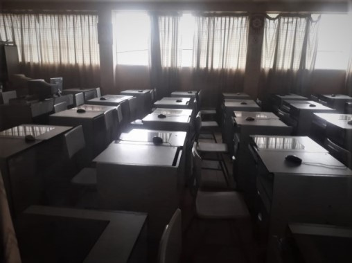

AULAS ACADÉMICAS:
DIMENSIONES:
Las aulas presentan un área de 60 Mts2, un espacio de 1.60 Mts2 por estudiante y docente con el metraje adicional a los espacios de tránsito.
MOBILIARIO Y EQUIPAMIENTO:
Nuestras aulas cuentan con un mobiliario óptimo para la enseñanza de nuestros estudiantes y facilitar su aprendizaje, contamos con:
- Atril.
- Mueble de cómputo.
- Pizarra acrílica.
- Asiento carpeta.
- Proyector multimedia.
